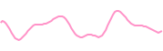
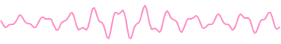
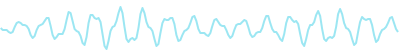

¿Cuánta música escuchó cada modelo?
PISTA
13,6 h
172 h
≈340 h
1 h10 h100 h1 mil h10 mil h100 mil h1 M h
Groove MIDI2019 · batería

MAESTRO2018 · piano

NSynth2017 · sonido

Magenta RT2025 · sonido
190.000 h
SI LO ESCUCHARAS SIN PARAR